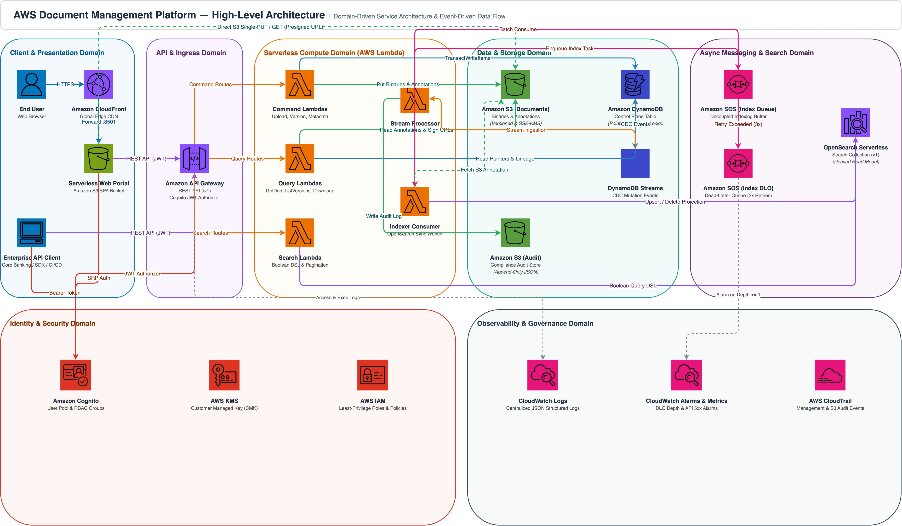
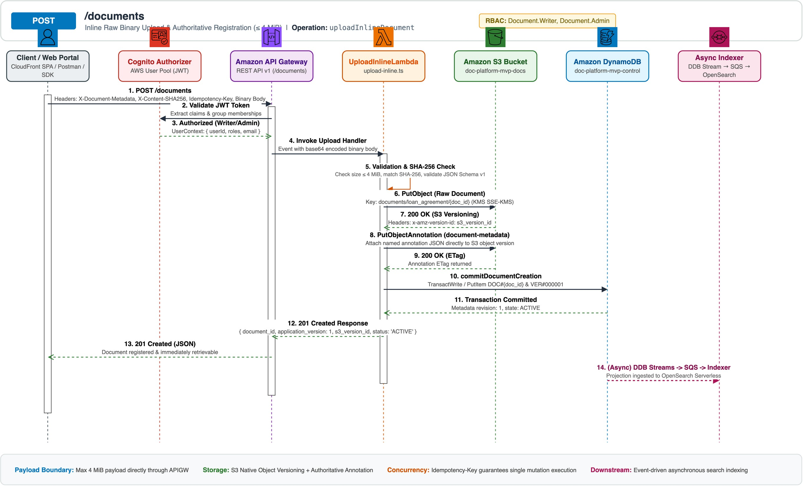

Cloud-Native Document Management System
Decoupled Serverless Architecture for Enterprise Content, Immutability & Metadata Governance

The 5-Tier Authority & Consistency Model
Eliminates distributed 2-phase transactions by assigning explicit authority boundaries to dedicated AWS services:
1. Content Authority Amazon S3
Immutable raw binary storage (PDF, TIFF, Office). Versioned objects with strict s3:DeleteObjectVersion DENY policies for WORM compliance.
2. Metadata Authority Amazon S3 Object Annotations
Full structured JSON metadata stored as authoritative native object annotations (document-metadata) attached directly to versioned S3 objects. Conforms to JSON Schema Draft-07.
3. Control Plane & Pointers Amazon DynamoDB
Single-table design tracking active document pointers, version history lineages, optimistic concurrency locks, and upload sessions at sub-10ms latency.
4. Search Read Projection OpenSearch Serverless
Strictly a derived read model hydrated asynchronously via DynamoDB Streams & SQS. Document mutations and downloads remain 100% operational if search is offline.
5. Non-Repudiation Audit S3 Audit Bucket
Immutable CDC mutation stream logs automatically written to a KMS-encrypted date-partitioned audit bucket for compliance and forensics.
Pure Serverless Architecture & AWS Lambda Compute
Zero Server Management, Instant Elasticity, and Fine-Grained Least-Privilege Micro-Perimeters
• Automatic multi-AZ high availability
• No persistent SSH or OS attack surface
• In-memory JSON schema compilation
Lambda Function Topology & Operational Responsibilities
| Lambda Function Name | Role / Trigger Type | Core Responsibilities | Timeout & Memory | IAM Scope |
|---|---|---|---|---|
UploadInlineFunction |
Sync REST / Command | Ingests ≤ 4 MiB files, calculates SHA-256, writes binary + annotation to S3, commits DynamoDB transaction. | 10s / 512 MB | S3 PutObject, DynamoDB TransactWrite |
UploadDirectInit / Complete |
Sync REST / Command | Generates 15-min presigned PUT URLs for large files; validates S3 upload completion and creates catalog records. | 10s / 256 MB | S3 Presign & HeadObject, DynamoDB Write |
MetadataUpdateFunction |
Sync REST / Command | Enforces OCC with expected_metadata_revision, validates Ajv schema, writes S3 annotation, updates DynamoDB pointer. |
10s / 256 MB | S3 Get/PutObject, DynamoDB ConditionalUpdate |
GetDocument / Version / Download |
Sync REST / Query | Reads DynamoDB pointer/version records, fetches authoritative S3 metadata, and mints short-lived presigned GET URLs. | 10s / 256 MB | DynamoDB Strongly Consistent Read, S3 Presign |
SearchDocumentsFunction |
Sync REST / Search | Translates filter criteria into OpenSearch DSL; executes IAM SigV4 signed queries with cursor pagination. | 15s / 512 MB | aoss:APIAccessAll on Collection |
StreamProcessorFunction |
Async / DynamoDB Stream | Listens to CDC events, writes date-partitioned JSON audit logs to S3, and forwards indexing jobs to SQS. | 30s / 256 MB | DynamoDB Streams, S3 Audit Put, SQS Send |
IndexerConsumerFunction |
Async / SQS Queue | Batches SQS messages, fetches S3 annotation, and upserts/deletes OpenSearch documents. Redrives poison messages to DLQ. | 60s / 512 MB | SQS Receive/Delete, S3 Get, AOSS Upsert |
Immutable Document Versioning & S3 Annotations
Solving S3's 2 KB Metadata Ceiling with Native S3 Object Annotations
s3:PutObjectAnnotation, s3:GetObjectAnnotation), attaching rich, queryable metadata payloads directly to versioned objects without sidecar file sprawl.
s3://{bucket}/documents/{class}/{doc_id} (Versioned Binary)└── Annotation Name:
document-metadata (JSON Metadata Payload)
- Zero File Sprawl: Metadata is bound directly to the object version via SDK commands (
PutObjectAnnotationCommand). - Decoupled Lifecycle: Business metadata edits update the named annotation in-place without copying binary files or generating redundant S3 binary versions.
- S3 Metadata Iceberg Readiness: Built-in support for auto-cataloging annotations into S3 Metadata Apache Iceberg tables for SQL analytics.
application_version: 1, 2, 3...):Monotonic integer. Increments strictly when a new binary file is uploaded via
POST /documents/{id}/versions.
s3_version_id: "3/L4bqt..."):AWS S3-generated unique immutable version identifier representing the raw physical bytes stored in S3.
metadata_revision: 1, 2, 3...):Monotonic OCC counter. Increments on every
PATCH /metadata call. Resets to 1 when a new application version is minted.
Field Immutability vs. Mutability Matrix (Schema: bank.document-metadata/1)
| Field Name | Category | Mutability Rule | Update & Governance Mechanism |
|---|---|---|---|
document_id, document_class, created_at, created_by |
System Identity | Strictly Immutable | Generated once upon initial document creation. Rejection if modified. |
application_version, content_type, content_length, content_checksum |
Binary Specifier | Immutable for Version | Tied cryptographically to raw bytes (SHA-256). Updates only on new version creation. |
metadata_revision, metadata_updated_at, metadata_updated_by |
Concurrency Tracking | System Monotonic | Managed automatically by Lambda and DynamoDB OCC conditional expressions. |
customer_id, complete_customer_id_code, account_id, business_area_code, loan_number, currency... |
Domain & Shared Traits | Mutable via PATCH | Modifiable via PATCH /metadata with optimistic concurrency checking. |
Storage Split: Amazon DynamoDB vs. OpenSearch Serverless
CQRS Architecture Decoupling High-Speed OLTP Control Plane from Elastic Search Projections
Amazon DynamoDB (Single-Table)
OLTP / Source of TruthActs as the platform's high-speed transactional backbone, optimistic lock coordinator, and pointer authority.
• Document Pointer:
pk: DOC#{id} | sk: DOC• Version History:
pk: DOC#{id} | sk: VER#{padded_version}• Upload Session:
pk: UPLOAD#{id} | sk: SESSION• Idempotency Lock:
pk: IDEMP#{client}#{key} | sk: REQUEST
- Optimistic Concurrency: Conditional updates (
ConditionExpression: current_metadata_revision = :exp). - Atomic Transactions:
TransactWriteItemsbinds pointer updates, version inserts, and idempotency locks. - CDC Streaming: DynamoDB Streams captures all mutations for asynchronous downstream processing.
Amazon OpenSearch Serverless (AOSS)
OLAP / Read Projection
Acts exclusively as a derived search projection index (documents-v1) for multi-field filtering and cursor pagination.
• Exact keyword filtering (
document_class, branch_code, status)• Numeric range queries (
loan_amount_minor_units)• ISO 8601 Date ranges (
signed_date, created_at)• Stateless Cursor Pagination via
search_after
- Zero Cluster Management: Auto-scales OpenSearch Compute Units (OCUs) dynamically.
- Fault Isolation: If OpenSearch experiences downtime, core uploads, metadata edits, and downloads remain 100% operational.
- IAM SigV4 Security: Direct IAM authentication with fine-grained access policies.
AWS Managed Services Inventory & Justification
Architectural Rationale for Every Cloud Building Block in the System
| AWS Service | Role in Architecture | Why Chosen (Architectural Justification) | Security & Governance Controls |
|---|---|---|---|
| Amazon API Gateway | Public REST Ingress & Routing | Fully managed serverless ingress; native Cognito JWT authorizer; stage throttling (1,000 RPS burst 2,000); binary payload passthrough (*/*). |
TLS 1.2+, WAF-ready, Cognito JWT validation. |
| AWS Lambda | Microservice Compute Engine | Pay-per-millisecond execution; zero OS maintenance; automatic scaling across AZs; sub-second cold starts with TypeScript/Node.js 20.x. | Individual IAM execution roles per function (least-privilege). |
| Amazon S3 | Content & Annotation Storage | 11 9s durability; native object versioning; high-throughput presigned URL generation bypassing compute bottlenecks. | SSE-KMS encryption, Block Public Access, Deny Delete Object Version. |
| Amazon DynamoDB | Transactional Control Plane | Single-digit millisecond latency at any scale; atomic transactions (TransactWriteItems); conditional updates for OCC; CDC Streams. |
KMS encryption at rest, PITR enabled, IAM fine-grained access. |
| Amazon OpenSearch Serverless | Derived Search Read Model | Full-text and multi-field structured search without cluster sizing or shard management; auto-scaling OCUs; IAM SigV4 authentication. | AOSS Encryption & Network Security Policies. |
| Amazon SQS & DLQ | Async Decoupling & Buffer | Buffers traffic spikes between DynamoDB Streams and OpenSearch; captures poison messages in doc-platform-mvp-index-dlq after 3 retries. |
KMS CMK queue encryption, DLQ CloudWatch Alarms. |
| AWS Cognito | Identity Provider & RBAC | Managed OAuth 2.0 / OIDC identity directory; issues cryptographic JWT tokens; maps user groups to RBAC roles (Reader, Writer, Editor, Admin). | JWKS token verification, password policy enforcement. |
| AWS KMS | Central Cryptographic Core | Customer Managed Key (alias/doc-platform-mvp) with annual automatic rotation encrypting S3, DynamoDB, SQS, and CloudWatch. |
Hardware Security Module (HSM) Level 3 backing. |
| Amazon CloudWatch & Trail | Observability & Audit Trail | Centralized JSON structured logging, DLQ depth alarms, API 5xx alerts, and immutable CloudTrail non-repudiation logs. | Log group KMS encryption, redaction of sensitive tokens. |
Asynchronous Event Streaming & Self-Healing Pipeline
Decoupled Indexing, Automated S3 Audit Logging, and Dead-Letter Queue Isolation
- Writes an immutable JSON audit log to
s3://audit-bucket/audit/{date}/{doc_id}_{event_id}.json. - Pushes an indexing message to the Amazon SQS Indexing Queue.
doc-platform-mvp-index-dlq and firing a CloudWatch Alarm.
{
"event_id": "e3b0c442-98fc-1c14-9afb-f4c8996fb924",
"event_type": "DOCUMENT_METADATA_UPDATED",
"document_id": "550e8400-e29b-41d4-a716-446655440000",
"document_class": "loan_agreement",
"application_version": 2,
"metadata_revision": 3,
"status": "ACTIVE",
"timestamp": "2026-08-18T15:05:00.000Z",
"actor_id": "usr_editor_02"
}
API Architecture & End-to-End Execution Sequences
Interactive Sequence Explorer & High-Resolution Diagram Visualizer (Excluding Health API)
/v1/documents
Inline Binary Upload (≤ 4 MiB)

Execution Highlights & Authority Handling
Direct upload for binary files up to 4 MiB. Validates SHA-256 and JSON Schema envelope, commits binary and authoritative JSON object annotation to Amazon S3, and executes an atomic DynamoDB TransactWriteItems creating the DOC# pointer, VER#0000000001 history record, and idempotency lock.
Bimodal Ingestion Architecture: Inline vs. Direct S3
Optimizing Ingestion Latency and Eliminating API Gateway 10 MiB Payload Bottlenecks
POST /v1/documents with binary body + headers:
Content-Type: application/pdfX-Content-SHA256: {hex_hash}X-Document-Metadata: {base64_json}
Benefits: Zero round-trip coordination; atomic single-request ingestion; instant 201 Created response.
POST /v1/documents/uploads (Initiate session & receive 15-min presigned S3 URL)Step 2:
PUT {presigned_url} (Direct binary stream to S3)Step 3:
POST /v1/uploads/{id}/complete (Verify S3 object & activate pointer)
Benefits: Bypasses API Gateway 10 MiB limit & Lambda memory overhead; streams at line-rate directly into S3.
Ingestion Performance & Scale Profile
~120ms - 250ms total E2E latency with synchronous DynamoDB transaction and S3 PutObject.
Supports up to 5 GB single-PUT or multi-part uploads with zero compute memory pressure.
Uncompleted upload sessions expire automatically via DynamoDB TTL after 24 hours.
Optimistic Concurrency Control & Schema Evolution
Preventing Lost Updates Under Extreme Multi-User Concurrency & Managing Dynamic JSON Schemas
When updating metadata, callers must provide their current revision number via expected_metadata_revision:
{
"expected_metadata_revision": 1,
"changes": { "branch_code": "TLV-05" }
}
- Conditional DynamoDB Commit: Executes
ConditionExpression: current_metadata_revision = :expRev. - Conflict Resolution: If another user edited the document first, returns
409 METADATA_CONFLICTwith the latest current revision, preventing lost overwrites.
Strict JSON Schema Draft-07 validation with additionalProperties: false:
Schemas versioned in Git (
schemas/loan_agreement-v1.json) and compiled into memory at Lambda cold-start via Ajv. Zero DB latency hops.
Dedicated DynamoDB schema table (
doc-platform-schemas) allowing live runtime schema creation without code redeployment.
Cognito Role-Based Access Control (RBAC) Enforcement
| Operation / Route | Document.Reader |
Document.Writer |
Document.MetadataEditor |
Document.Admin |
|---|---|---|---|---|
POST /documents (Inline & Direct Ingestion) |
❌ Denied | ✅ Allowed | ❌ Denied | ✅ Allowed |
GET /documents/{id}, GET /versions, GET /download |
✅ Allowed | ✅ Allowed | ✅ Allowed | ✅ Allowed |
PATCH /documents/{id}/metadata |
❌ Denied | ✅ Allowed | ✅ Allowed | ✅ Allowed |
POST /soft-delete & POST /restore |
❌ Denied | ❌ Denied | ❌ Denied | ✅ Allowed (Exclusive) |
Full-Stack Observability, Distributed Tracing & Audit Governance
Structured CloudWatch Logging, End-to-End Correlation IDs, Automated Alarms, and Immutable Audit Trails
Logger emitting structured JSON containing correlationId, documentId, userId, version, and route.
- Automatic PII & credential redaction
- Single-digit second CloudWatch Logs Insights indexing
requestId propagated as correlationId across async boundaries: DynamoDB Streams → SQS → OpenSearch Indexer.
- AWS X-Ray & ServiceLens visual map
- End-to-end async causality tracking
ObservabilityStack provisions automated health alarms and operational metrics on doc-platform-mvp-dashboard.
- DLQ Depth Alarm (
threshold ≥ 1message) - API 5xx Error Alarm (
≥ 5errors / 5 min)
Project: aws-document-management-platformSystem: DocPlatform|Env: dev|CDK
Real-time interactive queries across all command, query, worker logs and AWS Resource Groups:
fields @timestamp, level, message, documentId, userId
| filter correlationId = "c8f94d21-xxxx-xxxx-xxxx-xxxxxxxxxxxx"
| sort @timestamp asc
fields @timestamp, level, message, version, userId
| filter documentId = "doc-uuid-here"
| sort @timestamp desc
fields @timestamp, @logStream, level, message, error.message
| filter level = "ERROR" | sort @timestamp desc | limit 50
aws resourcegroupstaggingapi get-resources
--tag-filters Key=Project,Values=aws-document-management-platform
Separate KMS-encrypted S3 Audit Bucket (doc-platform-mvp-audit-*) capturing every state transition:
audit/events/YYYY/MM/DD/{documentId}_{timestamp}.json
Zero-Overhead CDC Ingestion Event-Driven
DynamoDB Streams triggers BackgroundWorkerFunction asynchronously, generating cryptographically verified audit records with zero impact on user-facing API latency.
WORM Regulatory Compliance SOX / GDPR / HIPAA
Locked with strict IAM Deny policies preventing version deletion or modification, ensuring tamper-proof legal discovery trails.
Strategic Solution Architecture Summary
Key Architectural Decisions, Enterprise TCO Benefits, and Future Scalability
s3:DeleteObjectVersion IAM denies provides bulletproof regulatory compliance.
Architectural Decision Record (ADR) Summary
| Decision Area | Selected Architecture | Alternatives Rejected | Decisive Architectural Rationale |
|---|---|---|---|
| Metadata Storage | S3 Native Object Annotations | S3 Object Metadata Headers (2 KB), Sidecar Files, RDBMS JSONB columns | Eliminates 2 KB header limit; avoids sidecar file proliferation; enables metadata edits without binary duplication; ready for Iceberg SQL analytics. |
| Control Plane | DynamoDB Single-Table Design | Amazon Aurora PostgreSQL, MongoDB Atlas | Predictable single-digit millisecond latency; native CDC Streams; atomic multi-item transactions without connection pool limits. |
| Search Tier | OpenSearch Serverless (AOSS) | Managed OpenSearch Clusters, DynamoDB GSI queries | Zero cluster provisioning/patching; dynamic OCU auto-scaling; complex range/filter queries not supported by DynamoDB keys. |
| Compute Engine | AWS Lambda (Node.js 20.x TS) | ECS Fargate Containers, EKS Kubernetes | True serverless operational simplicity; sub-second scaling; fine-grained least-privilege IAM micro-perimeters. |